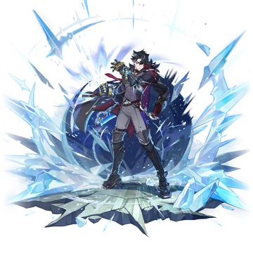
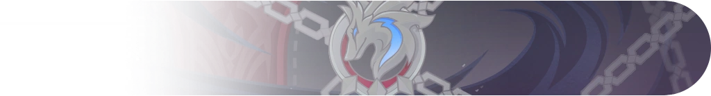

Wriothesley  W i k i
W i k i
ㅤㅤㅤㅤㅤㅤㅤㅤㅤㅤㅤㅤㅤㅤㅤㅤBanner Design
W i k iㅤㅤㅤㅤㅤㅤㅤㅤㅤㅤㅤㅤㅤㅤㅤㅤBanner Design
Wriothesley ㅤㅤㅤㅤㅤㅤㅤㅤㅤㅤㅤㅤㅤㅤㅤㅤㅤㅤㅤㅤㅤㅤㅤㅤㅤㅤㅤㅤㅤㅤㅤㅤㅤㅤㅤㅤㅤㅤ
Chefe da Fortaleza Meropide"
— Se Wriothesley tivesse um cartão de visita, só teria isso escrito.
Um homem de poucas palavras, que assim como o recinto que administra,
faz uma vigília silenciosa pelos criminosos exilados no fundo do mar.
Apesar de ser um lugar discreto, por ser uma residência de criminosos,
a Fortaleza Meropide contém uma rede de conflitos de interesses que pode corromper a qualquer um.
Mesmo se alguém tramasse se infiltrar nesse lugar,
acabaria rapidamente assimilado por ele como migalhas de pão em um prato de sopa.
Quando elogiam esse ilustre Duque por sua capacidade de resolver problemas difíceis,
Wriothesley simplesmente põe sua xícara de chá na mesa... e pega seu jornal.
"Você entendeu errado. Eles só queriam encontrar um lugar para ter uma vida regrada.
Eu simplesmente dei a eles a "tranquilidade" que eles precisavam".

Wriothesley In Gameㅤ